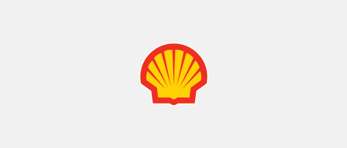

Partners Information.
BMW Ladies Championship Official Partners.
Partners
Partners Information.
BMW Ladies Championship official partners.
- Main Partners
-
About NIKE, Inc.
NIKE, Inc., based near Beaverton, Ore., is the world's leading designer, marketer and distributor of authentic athletic footwear, apparel, equipment and accessories for a wide variety of sports and fitness activities. Wholly-owned NIKE, Inc. subsidiary brands include Converse, which designs, markets and distributes athletic lifestyle footwear, apparel and accessories; and Hurley, which designs, markets and distributes surf and youth lifestyle footwear, apparel and accessories.

Royal Dutch Shell PLC
Royal Dutch Shell plc is incorporated in England and Wales, has its headquarters in The Hague and is listed on the London, Amsterdam, and New York stock exchanges. Shell companies have operations in more than 70 countries and territories with businesses including oil and gas exploration and production; production and marketing of liquefied natural gas and gas to liquids; manufacturing, marketing and shipping of oil products and chemicals and renewable energy projects.
- corporate partners
-

Korean Air
As a leader in the global transport network, at the end of August 2019, Korean Air owned 169 aircraft and operated scheduled flights to 125 cities in 44 countries worldwide, including 13 cities in Korea. Korean Air is performing a pivotal role in further enhancing Korea's progressive reputation around the world. We are expanding our global network by establishing new routes and are maintaining growth by increasing overseas sales. Moving forward, our goal is always 'Excellence in Flight' and to be recognized as an industry leader by promoting sustainable growth through strengthened competitiveness and by being able to quickly and flexibly respond to market changes and customer needs.
PARADISE HOTEL BUSAN
Paradise Hotel Busan is located at the place where the sky touches the ocean.
Situated at the backdrop of a blessed landscape in Haeundae beach, Paradise Hotel Busan is the best 5 star hotel(Special First Class) in Busan with 532 rooms.All sorts of customers will be satisfied by the modern and cozy rooms, high-end outdoor ocean spa& pool and 9 restaurants as the must-go food destinations. Moreover, the distinctive four seasons add greater motivation for tourists to visit this 'It Place'. Among the 5 star hotels in Busan, Paradise Hotel Busan is the only place where you can have a look over Haeundae beach from the balcony. Access to the balcony from the room is designed for the customers to enjoy the view over Haeundae beach, the sound of the wind and waves. This special feature helps not only the tourists from Seoul or other regions but also the business visitors remember the hotel in a favorable way. Taste and see that Paradise is different in the collection of the artworks and sculptures at every corner and in the scale of the wide garden area. It is filled with the works of not just the famous Korean artists but the internationally well-known David Hockney, Anish Kapoor, Alex Katz and Andy Warhol. In the garden around the hotel, you can find beautiful trees and exceptional sculptures along the promenade where you will feel the superior comfort of a suburban gallery.
Rolex
Rolex, a Swiss watch manufacture headquartered in Geneva, is recognized the world over for its expertise and the quality of its products. Its Oyster Perpetual and Cellini watches, all certified as Superlative Chronometers for their precision, performance and reliability, are symbols of excellence, elegance and prestige. The word “Perpetual” is inscribed on every Rolex Oyster. But more than just a word on a dial, it is a philosophy that embodies the company's vision and values. Hans Wilsdorf, the founder of the company, instilled a notion of perpetual excellence that would drive the company forward. This led Rolex to pioneer the development of the wristwatch and numerous major watchmaking innovations, such as the Oyster, the first waterproof wristwatch, launched in 1926, and the Perpetual rotor self-winding mechanism, invented in 1931. Rolex has registered over 500 patents in the course of its history. A truly integrated and independent manufacturing company, Rolex designs, develops and produces in-house the essential components of its watches, from the casting of the gold alloys to the machining, crafting, assembly and finishing of the movement, case, dial and bracelet. Furthermore, Rolex is actively involved in supporting the arts and culture, sport and exploration, as well as those who are devising solutions to preserve the planet.
- supplier partners
-

AON
Aon is a leading global professional services firm providing a broad range of risk, retirement and health solutions. Aon's 50,000 colleagues in 120 countries empower results for clients by using proprietary data and analytics to deliver insights that reduce volatility and improve performance. Aon is the Official Professional Services Firm of the LPGA and are proud to introduce a unique, season long golf competition in partnership with the LPGA. The Aon Risk Reward Challenge will highlight the world's best professional golfers as they tackle the most strategically challenging holes across not only the LPGA, but also the PGA TOUR regular season. The winning player from both Tours will each win an equal $1 million prize.
Erdinger
Starting as a family business in 1886, Erdinger became the world's beloved 'German Original Beer' more than 130 years. The secret is in the strict compliance of the traditional German brewing methods. Edinger made with the combination of Bavarian brewing technology and the fine yeast follows the Bavarian Purity Law that does not contain any additives other than water and hops, yeast and malt. The second bottle fermentation for a month after production offers a distinct taste of Erdinger from natural carbonate.
Edinger Weissbräu is the world's largest wheat beer brewery and produces beer sold in more than 90 countries around the world. All beers are made without any additives except water, hop, malt and yeast under the Bavarian Purity Law, and insist on uncompromising perfection for the best taste and quality in the process.
Bavarians don't like to rush things – everything is given the time it needs. Edinger insists on its special second bottle fermentation for an additional month after finishing the first fermentation with select materials and strict recipes. The traditional approach that has been adhering to the best taste, even if it costs more time and money, is underpinning the reputation of the authentic German wheat beer today.Leaders
Leaders cosmetics is a professional cosmeceutical company with over 10 years of experience in the global skin care industry. Leaders is the number 1 seller of sheet masks in the world, founded by skilled dermatologists from Seoul National University in South Korea. They deeply understood the importance of beautiful skin and its impact on their patients' self-confidence. Leaders Cosmetics is fully committed to bringing out the best in our customers and restoring their skin to its most beautiful potential.

BNK Financial Group
As a result of consistent innovations and challenges throughout a period of profound and tough economic and financial environment change, our company that became the first regional financial group on March 15, 2011 has grown as the leading financial provider with 8 subsidiaries such as Busan Bank, Kyongnam Bank, BNK Capital, BNK Securities, BNK Savings Bank, BNK Asset Management, BNK Credit Information, and BNK System. BNK's growth is deeply rooted in region. The affection and support from regions and customers make us who we are. We will go forward partnered with communities, developing diversified financial solutions and delivering on commitments.